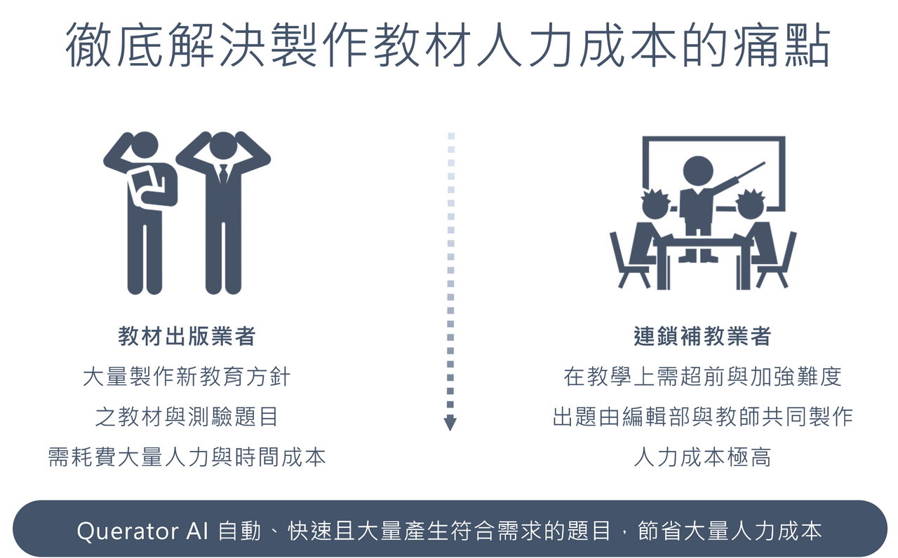
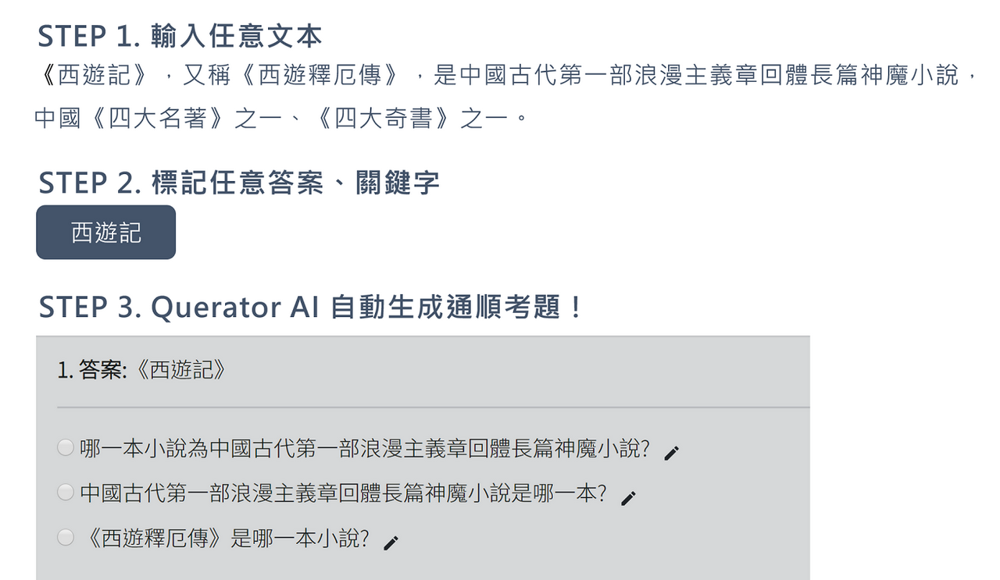

Querator AI
讓人工智慧幫您出題！閱讀測驗試題自動生成！
效果與人工相同、操作簡單好上手
自動、快速、大量、客製化

Demo

團隊成員
Querator AI 為來自中興大學資工系之新創團隊，由范耀中教授、詹英鴻技術長帶領，致力研究機器閱讀與自然語言生成研究，目標成為將文字型 AI 產品化之公司，希望將人工智慧融入生活，成為我們的好夥伴！
聯絡我們
想了解更多訊息與體驗 Querator AI 系統嗎？
歡迎寄信與我們聯絡
Email：service@queratorai.com